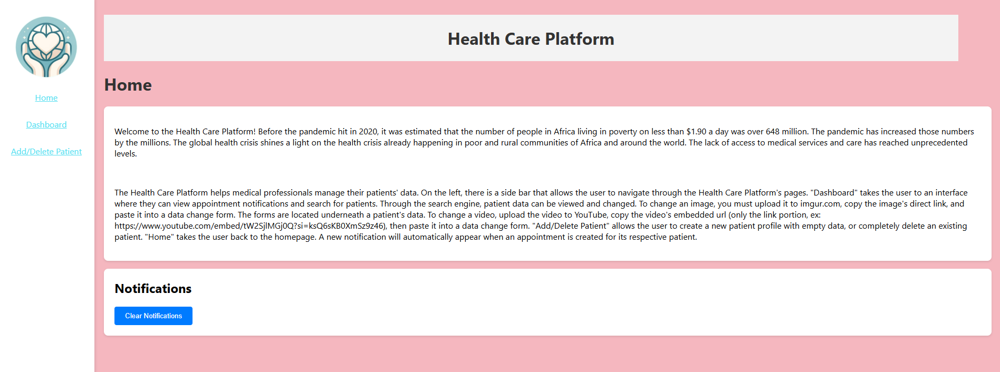
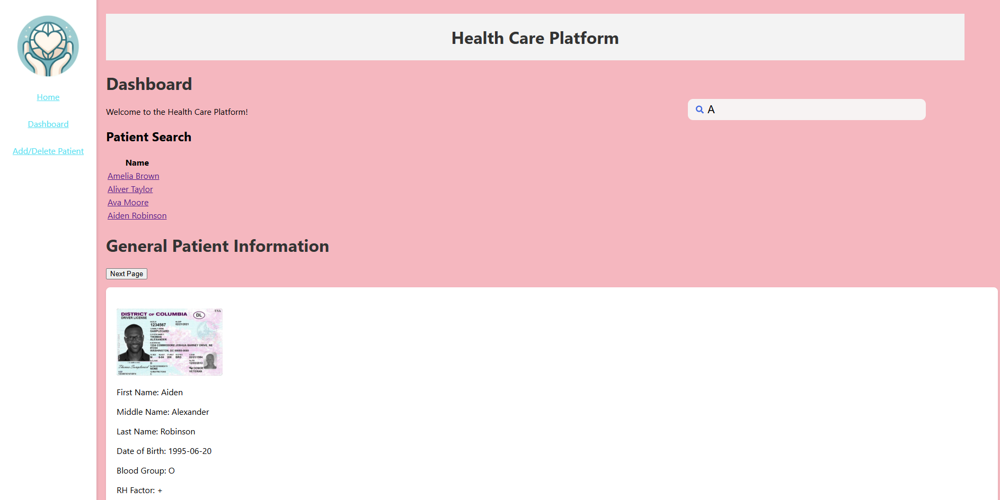
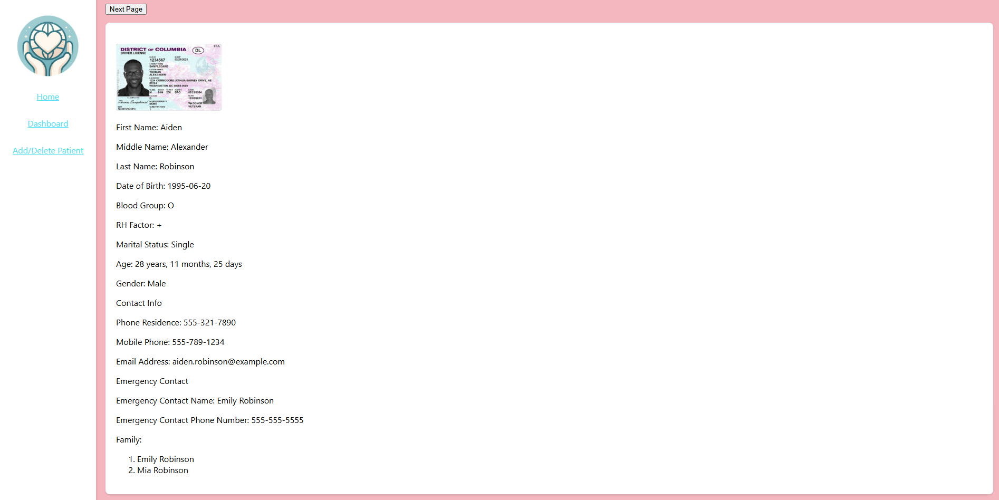
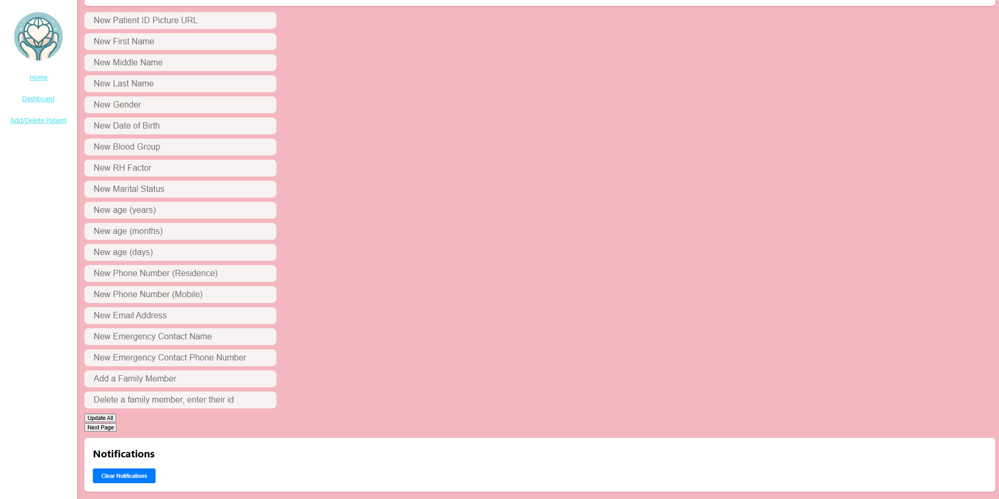
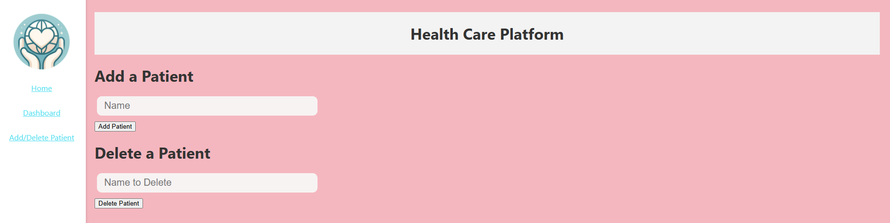

Healthcare Platform
I collaborated with 5 other classmates and my teacher in my CSC131 class to develop a healthcare application to met a client's requirements, allowing healthcare workers to view and manage their patient's data, satisfying the client's needs. I built most of the frontend with HTML, CSS, JavaScript, and React. This group project spanned over the majority of my team's spring semester in 2024.
The source code for our project can be found here:
 Healthcare Platform Repository
Healthcare Platform Repository
It is saved on my classmate's GitHub account.
My teacher, Ahmed Salem, found a client who wanted an application that helped healthcare workers easily access patient information and appointments from anywhere on their device. It helps workers keep better track of their patients and adjust any of their information as needed at any time. Apparently, he found a client who was in charge of a health organization in Africa, but there was no proof that this client was real. In fact, my class was supposed to meet with this client on zoom occasionally, but the client never showed up. Although our client may have not been real, our project was still a good learning experience.
We ended up creating a website because all of us already knew Java, and didn't want to learn too many new coding languages. The frontend is written in HTML, CSS, and JavaScript, and React is used as a framework. The backend is written in Java, and Spring Boot is used as a framework. The database is managed using MySQL.
I already knew HTML and CSS, so I decided to help create the frontend with one other classmate. Our team's leader worked on both the backend and the MySQL database. The other group members worked on different layers of the backend.
Here is what the homepage of our healthcare platform looks like:
The homepage explains to the user what the purpose of the healthcare platform is. It explains how to upload images and videos if the user doesn't want to edit the source code or add images to the database directly. The sidebar on the left allows users to access more features. Notifications are added to the notification box whenever an appointment is created.
Here is what the dashboard looks like. You can search for patients using the search bar. Once you search for a patient, you can click on their link and view their information in the dashboard:
  If availible, you can click the "Previous Page" and "Next Page" buttons to see more patient information.
Here is an example of what data a patient's profile may contain:
- First Name: Amelia
- Middle Name: Grace
- Last Name: Brown
- Date of Birth: 1987-09-05
- Blood Group: B
- RH Factor: -
- Marital Status: Divorced
- Age: 35 years, 5 months, 21 days
- Gender: Female
- Contact Info:
- Phone Residence: 555-987-6543
- Mobile Phone: 555-123-4567
- Email Address: amelia.brown@example.com
- Emergency Contact:
- Name: William Brown
- Phone Number: 555-555-5555
- Family:
- William Brown
- Olivia Brown
- Current Illnesses:
- Migraine
- Headache
- Tension
- Previous Illnesses:
- Vertigo
- Fibromyalgia
- Specific Allergies:
- Latex
- Sulfites
- Current Medications:
- Sumatriptan
- Muscle Relaxants
- Water
- Past Medications:
- Topiramate
- Meloxicam
- Lab Reports:
- Text
- Photos
- Radiology
- MRI Tracing Images
- Appointments:
- Appointment Times
- Past Doctor Visits
- X-Rays
- Vaccination Times
When you click on the "Add/Delete Patient" link in the sidebar, this is what it looks like:
To add a patient, type their name into the input box, press the button below it to submit, and a patient with no information has been created. Patient information can be added in the dashboard. Deleting a patient works in the same way, type their name into the input box and they will be removed.
The Development Process
My group faced many challenges, and we didn't overcome all of them. Our previous classes haven't prepared us to create a full stack application. For the frontend, I had to learn JavaScript and React in a short amount of time so I could catch up with my teamate. In the end, our frontend was able to accomplish what the client asked for, except for some issues with cybersecurity and the database. None of us knew anything about cybersecurity and we didn't have time to learn how to secure our application, so we decided to let the client take care of worker account creation and logins. For the database, it can't be used anymore because I can't seem to find the MySQL dump file required to create it on GitHub or on my PC. I couldn't find it in my group's chat messages either because they were deleted. I did take safety precautions and added mock patient data to the frontend in case our backend didn't work. Without the backend, everything except saving data works in our application. 3 group members were responsible for the Java Spring Boot backend, but I think they ran into a lot of issues. None of us have ever used Spring Boot before, so I don't think they had enough time to make it correctly.
Although our healthcare platform was made poorly, we still got a decent grade because the frontend was usable. I've learned important soft skills while working with my classmates. I became better at teamwork, problem solving, and learning new technologies fast.
If you really want to try using our project, the instructions can be found in its readme files on GitHub. Only the frontend is functional.